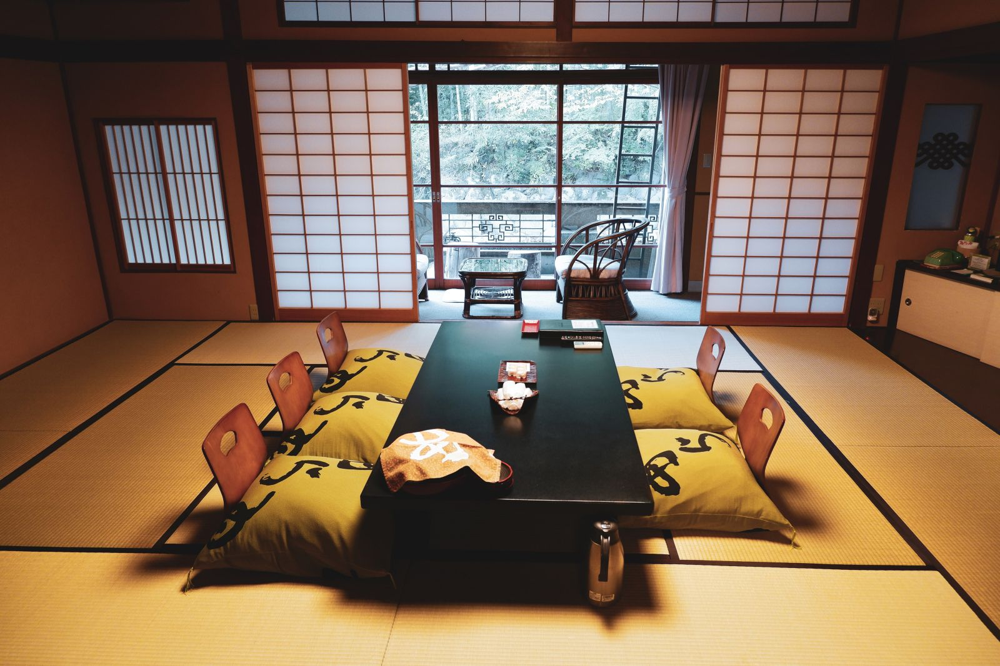

Japán lakossága több mint 126 millió fő. 75%-uk olyan városi területeken él, mint például Tokió, Yokohama, Kawasaki, Osaka és Nagoya. Az ilyen sűrűn lakott városokban a hely drága, a telekárak pedig rendkívül magasak. Japán lakossága 2011 óta öregszik, a világ legidősebb lakosai közül néhányan az Okinawa-szigeteken, például Amami Ooshima szigetén élnek.
A legtöbb városi dolgozó irodai munkát végez, és fizetéses emberként (salary man) vagy OL-ként (irodai hölgyek) ismert. A vezetés hierarchikus, a munkamorál pedig szigorú, elvárják a túlórázást. A pontos távozás valójában az elkötelezettség vagy a lojalitás hiányára utal. Ennek ellenére az emberek magas életszínvonalat élveznek.
A lakások jellemzően apartmanok vagy "kúriák", ahogy a japánok ismerik őket. A külvárosokban hagyományosabb stílusú, szalma szőnyegekkel (tatami szőnyegek) és futonokkal (matrac) berendezett lakások találhatók, míg a vidéki városokban egyre népszerűbbek a nyugati stílusú lakások (asztalokkal és székekkel!). A következő képen egy hagyományos japán otthont láthatunk.

A munkába járás és a munkából való távozás vonattal történik. Emiatt Tokióban és más nagyvárosokban a csúcsforgalom elviselhetetlen lehet a külföldi látogatók számára, ezért a legjobb, ha ezekben az órákban (reggel 7:00 - 9:30 / délután 5:00 - 6:30) elkerüljük a népszerű vasútvonalakat. A rendkívül hatékony vonat- és metróhálózatnak köszönhetően a Japánban való utazás igazi élmény, és messze a legjobb módja a közlekedésnek. Csak el kell tudni igazodni. :)
A "Shinkansen", vagyis a "bullet train" a Japán nagysebességű vasúthálózatán közlekedő személyvonat, amely képes elérni a 320 km/órás sebességet. A Shinkansen vonatvonalak listáján az Akita, a Hokuriku, a Joetsu, a Kyushu és a Yamagata vonalak szerepelnek.